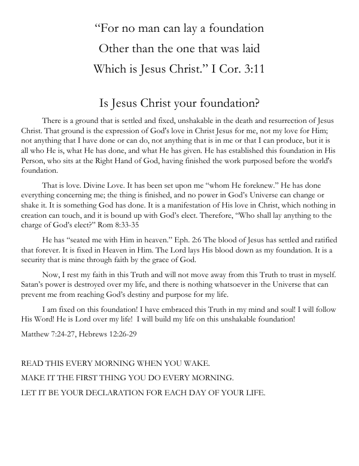
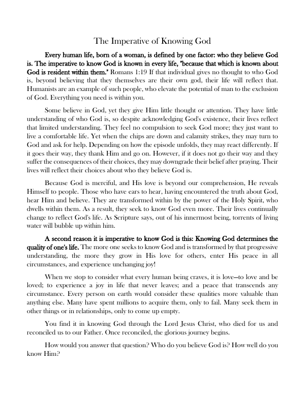
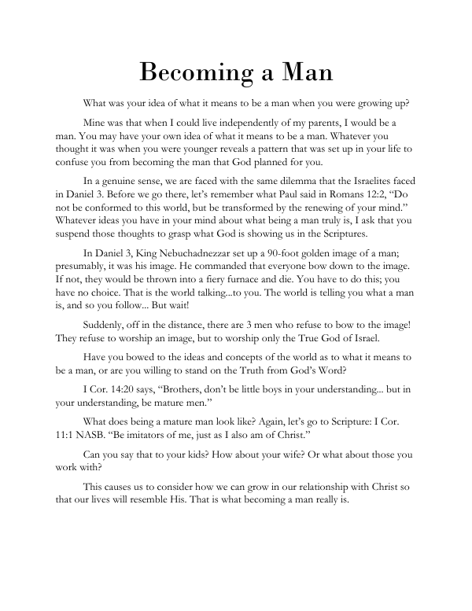
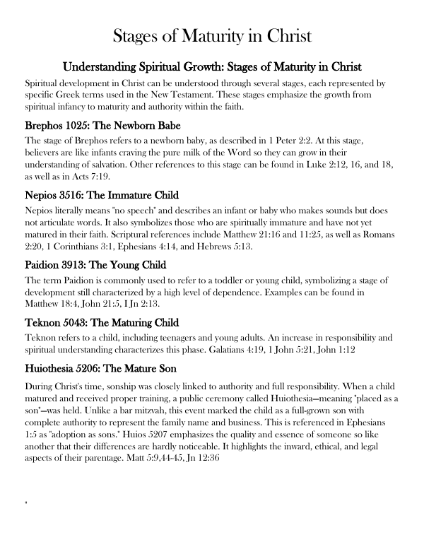
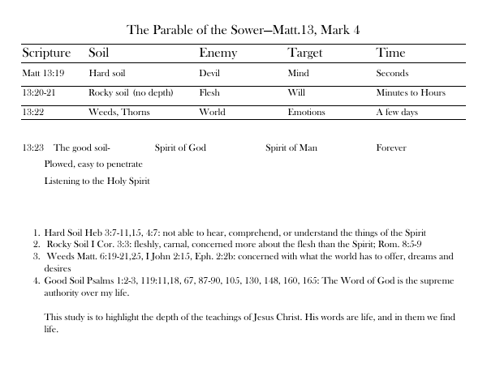
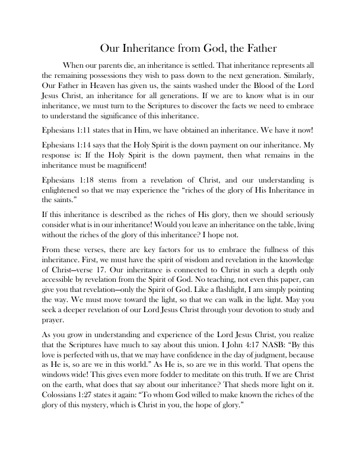

Daily Declaration · 1 page
Jesus Christ, Our Foundation
A one-page declaration built on 1 Corinthians 3:11. Read it each morning to rest your faith on what Christ has finished, not on anything you can produce.
Welcome
Thank you for joining. Download any of the studies below. A link to this page is also on its way to your inbox, so you can come back anytime.
Where every disciple begins: who God is, and the ground we stand on.

Daily Declaration · 1 page
A one-page declaration built on 1 Corinthians 3:11. Read it each morning to rest your faith on what Christ has finished, not on anything you can produce.

Teaching · 1 page
Every life is shaped by one question: who do you believe God is? A short teaching on why knowing God determines the quality of your life.
From over 15 years of discipling men.

For Men · 1 page
Drawing on Daniel 3 and 1 Corinthians 11:1, a challenge to set aside the world's idea of manhood and become the man God planned.
Studies for believers who want to move from milk to meat.

Word Study · 1 page
Five New Testament Greek words that trace spiritual growth, from brephos, the newborn babe, to huiothesia, the son placed with full authority.

Study Chart · 1 page
A chart of Matthew 13 and Mark 4 that matches each soil to its enemy, what it targets, and how long the Word survives there, with Scriptures for each.

Meditation · 2 pages
A meditation on Ephesians 1 and Romans 8: what the Father has given His children in Christ, and why no believer should leave it on the table.
Richard teaches churches, men's groups, and small groups.
Invite Richard to Speak →